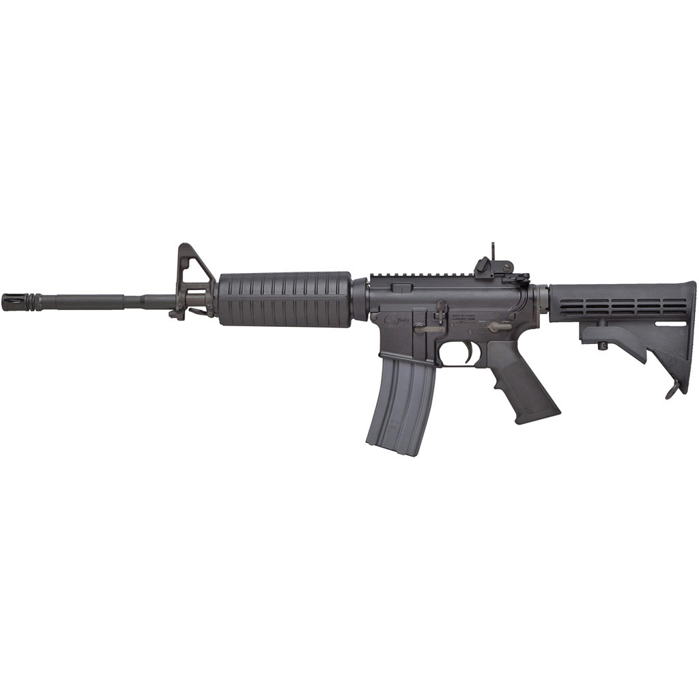
M4 Carbine
- Origin: United States
- Caliber: 5.56×45mm NATO
- Introduced: 1994
- Type: Carbine
The M4 Carbine is a compact derivative of the M16 rifle family developed for increased mobility in modern combat environments. Introduced in the 1990s, it was designed to meet the needs of mechanized infantry and special operations forces requiring a lighter and more adaptable weapon platform. Its shortened barrel and collapsible stock improve maneuverability in confined spaces while maintaining compatibility with existing NATO standards. The M4’s modular architecture supports a wide range of optics and accessories, reflecting a shift toward customization in modern military doctrine. It has become a defining symbol of 21st-century Western infantry forces.

AK-47
- Origin: Soviet Union
- Caliber: 7.62×39mm
- Introduced: 1947
- Type: Assault Rifle
The AK-47 was developed in the Soviet Union in the aftermath of World War II and officially adopted in 1947. Designed by Mikhail Kalashnikov, it emphasized reliability, ease of production, and operation under extreme conditions. Its simple construction and loose tolerances allowed it to function in environments where more complex systems might fail. The rifle’s widespread distribution during the Cold War led to its adoption by numerous nations and non-state groups worldwide. Over time, the AK-47 became more than a weapon, evolving into a cultural and political symbol representing revolution, resistance, and industrial-era mass armament.
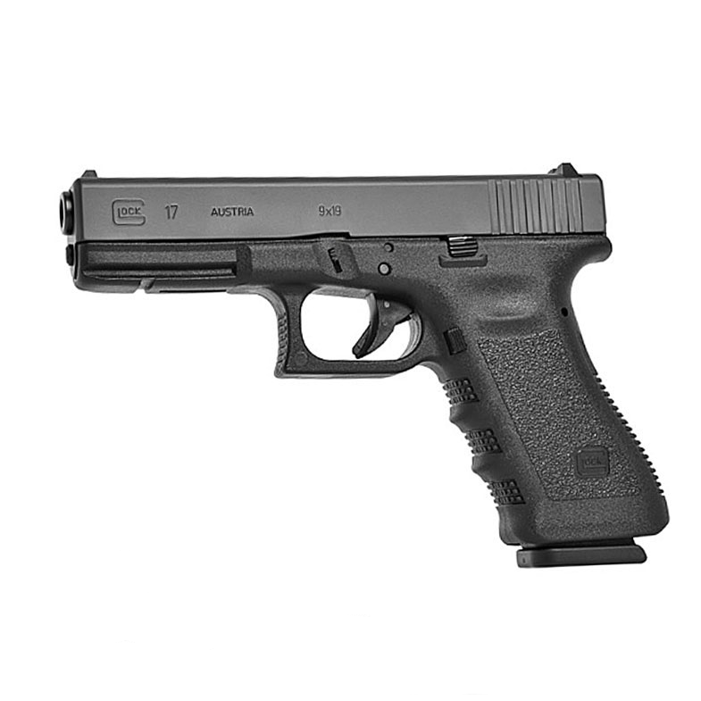
Glock 17
- Origin: Austria
- Caliber: 9×19mm
- Introduced: 1982
- Type: Semi-automatic Pistol
The Glock 17, introduced in the early 1980s, marked a major shift in handgun design through its extensive use of polymer materials. Developed in Austria, it challenged traditional perceptions of durability by demonstrating that non-metal frames could withstand military and law enforcement use. Its lightweight construction, simplified internal design, and emphasis on reliability contributed to rapid international adoption. The Glock 17 influenced an entire generation of modern pistols, encouraging manufacturers to rethink ergonomics, materials, and manufacturing efficiency. Today, it is widely studied as a landmark example of late-20th-century industrial and engineering innovation in firearms design.
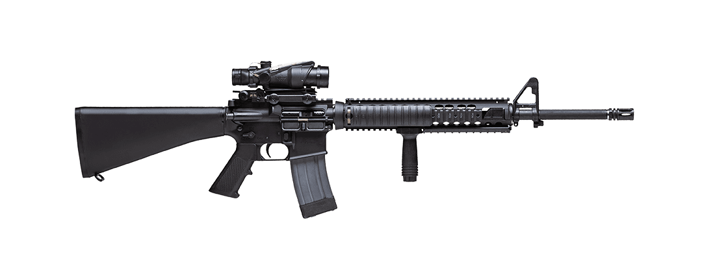
M16A4
- Origin: United States
- Caliber: 5.56×45mm NATO
- Introduced: 1997
- Type: Service Rifle
The M16A4 represents a later stage in the evolution of the M16 rifle platform, incorporating decades of operational feedback and technological refinement. Adopted primarily by the U.S. Marine Corps, it features a full-length barrel and a flat-top receiver designed to accommodate modern optics. The A4 variant reflects a transitional period in military small-arms development, bridging traditional iron-sight rifles with fully modular systems. Its continued service highlights the adaptability of the original M16 design and underscores the importance of incremental improvement rather than complete replacement in long-term military equipment programs.
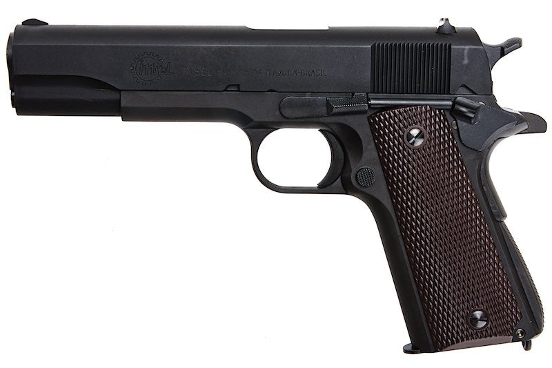
M1911
- Origin: United States
- Caliber: .45 ACP
- Introduced: 1911
- Type: Semi-automatic Pistol
The M1911 is a semi-automatic pistol designed by John Moses Browning and formally adopted by the United States military in 1911. Its development followed combat experience that highlighted the need for a more effective service sidearm. Chambered in .45 ACP, the pistol became known for its balance, durability, and reliability under harsh conditions. The M1911 served as the standard U.S. military handgun through World War I, World War II, the Korean War, and the Vietnam War. Beyond military service, it has had lasting influence on handgun design and remains widely studied for its mechanical simplicity and historical significance.

Uzi
- Origin: Israel
- Caliber: 9×19mm
- Introduced: 1954
- Type: Submachine Gun
The Uzi submachine gun was developed in Israel in the early 1950s and became known for its compact size and distinctive profile. Designed for armored crews and support personnel, it prioritized ease of handling and storage in confined environments. The Uzi’s widespread export success made it a recognizable presence in military, security, and popular culture contexts throughout the Cold War. Its straightforward construction and unique layout contributed to its reputation as a practical defensive weapon for its era. Today, the Uzi is often studied as an example of post-war innovation driven by national security needs.
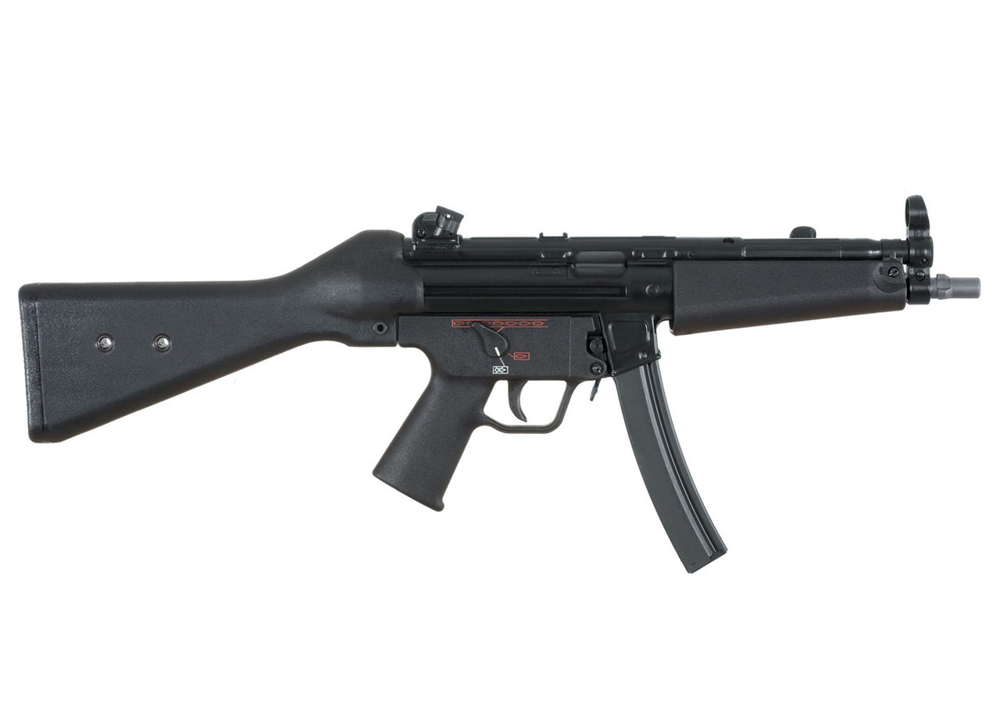
HK MP5
- Origin: Germany
- Caliber: 9×19mm
- Introduced: 1966
- Type: Submachine Gun
The MP5 is a German submachine gun introduced in the 1960s and renowned for its precision engineering and controlled handling. Unlike many contemporaries, it employed a delayed-roller blowback system derived from earlier rifle designs, contributing to its smooth operation. The MP5 gained prominence through widespread adoption by military, law enforcement, and counter-terrorism units during the late Cold War period. Its association with specialized units and hostage-rescue operations helped define the visual identity of elite tactical forces. The MP5 remains influential as a benchmark for quality and refinement in compact firearm design.

Barrett M82
- Origin: United States
- Caliber: .50 BMG
- Introduced: 1989
- Type: Anti-materiel Rifle
The Barrett M82 is a semi-automatic, large-caliber rifle introduced in the 1980s and designed for long-range and specialized military roles. Developed by Ronnie Barrett, it gained attention for its ability to operate at distances beyond traditional infantry weapons. The rifle’s design emphasizes durability, recoil mitigation, and adaptability to harsh environments. It has been adopted by numerous armed forces for tasks involving material targeting and extended-range engagement. Beyond its operational role, the M82 represents a shift toward highly specialized firearms developed outside traditional state arsenals, influencing modern approaches to precision and long-range military equipment.

Desert Eagle
- Origin: United States / Israel
- Caliber: .50 AE / .44 Magnum
- Introduced: 1983
- Type: Semi-automatic Pistol
The Desert Eagle is a large-frame semi-automatic pistol developed in the late 20th century and is notable for its unconventional engineering and imposing appearance. Designed in the United States with contributions from Israeli manufacturers, it was created to chamber powerful cartridges rarely associated with semi-automatic handguns. Its distinctive size and angular profile set it apart from traditional service pistols, making it more prominent in sporting, cinematic, and popular culture contexts than in military adoption. The Desert Eagle is widely recognized as a symbol of excess and mechanical ambition, often studied for its unique design approach rather than practical battlefield application.
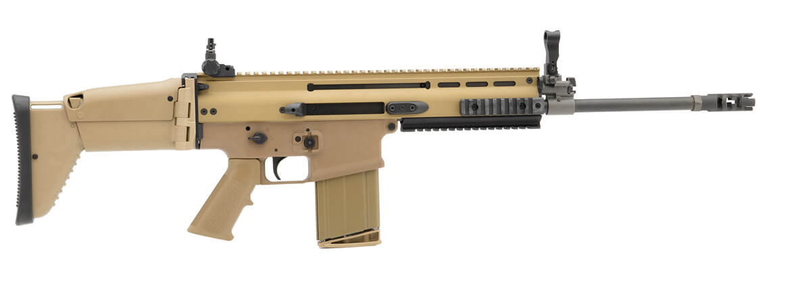
FN SCAR
- Origin: Belgium
- Caliber: 5.56×45mm / 7.62×51mm
- Introduced: 2009
- Type: Modular Rifle
The FN SCAR was developed in the early 21st century in response to evolving military requirements for adaptable weapon systems. Designed with modularity as a core principle, it allows configuration changes to suit different operational roles. The rifle reflects modern military emphasis on flexibility, interoperability, and ergonomic design. Its development process incorporated extensive user feedback, signaling a shift toward soldier-centric equipment design. The SCAR’s architecture and materials illustrate contemporary trends in firearms engineering, where adaptability and lifecycle support are as important as performance. It stands as a representative example of modern Western small-arms philosophy.

Accuracy International AWM
- Origin: United Kingdom
- Caliber: .300 Winchester Magnum / .338 Lapua Magnum
- Introduced: 1993
- Type: Bolt-action Sniper Rifle
The Accuracy International Arctic Warfare Magnum (AWM) is a bolt-action sniper
rifle developed in the United Kingdom and introduced during the late Cold War.
It was designed with extreme environmental reliability in mind, particularly
for cold-weather operations. The AWM gained international recognition through
adoption by military and law enforcement units seeking long-range precision and
consistency. Its design emphasizes durability, precision manufacturing, and
modular adaptability. The Arctic Warfare series helped establish Accuracy
International as a leading manufacturer of precision rifles and remains a
benchmark in modern sniper rifle design.
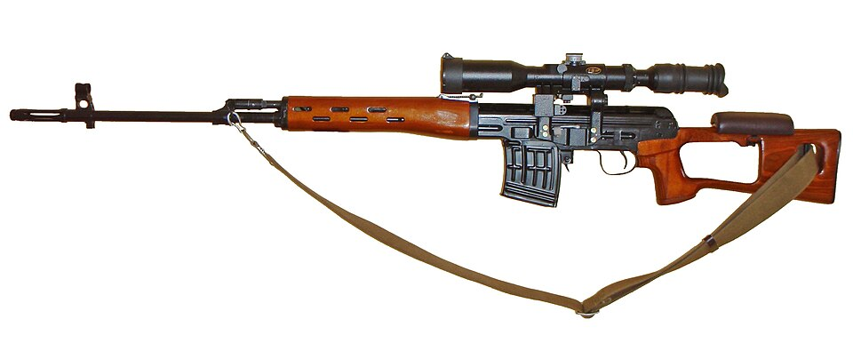
Dragunov SVD
- Origin: Soviet Union
- Caliber: 7.62×54mmR
- Introduced: 1963
- Type: Semi-automatic Designated Marksman Rifle
The Dragunov SVD is a semi-automatic rifle developed in the Soviet Union to extend
the effective range of standard infantry units. Unlike traditional sniper rifles,
it was designed for squad-level support rather than isolated precision roles.
Its design prioritizes reliability, durability, and ease of integration into
existing military formations. The SVD has been widely adopted across Eastern
Europe, Asia, and the Middle East, and remains an influential example of a
designated marksman rifle concept.
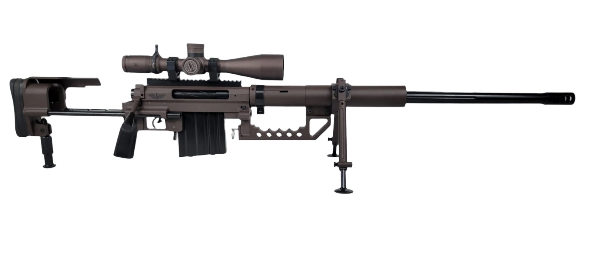
CheyTac M200
- Origin: United States
- Caliber: .408 CheyTac
- Introduced: Early 2000s
- Type: Bolt-action Precision Rifle
The CheyTac M200 is a large-caliber bolt-action rifle developed to explore
extreme long-range ballistic performance. Introduced in the early 21st century,
it reflects growing interest in precision engineering at distances beyond
traditional sniper roles. Its size and specialized design place it firmly in
experimental and niche military contexts rather than standard infantry use.
The M200 is frequently referenced in discussions of long-range accuracy,
ballistic research, and the technological limits of modern small-arms design.

Heckler & Koch G36
- Origin: Germany
- Caliber: 5.56×45mm NATO
- Introduced: 1997
- Type: Assault Rifle
The G36 was developed as a lightweight, modern replacement for earlier German
service rifles following the end of the Cold War. Its extensive use of polymer
materials reflects late-20th-century trends in weight reduction and manufacturing
efficiency. The rifle was designed to integrate optical systems from the outset,
highlighting the increasing importance of advanced sighting technology in modern
infantry doctrine.
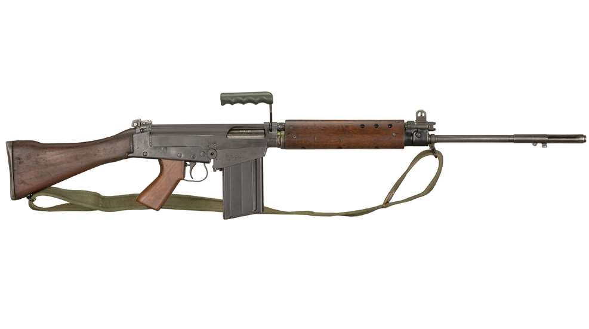
FN FAL
- Origin: Belgium
- Caliber: 7.62×51mm NATO
- Introduced: 1953
- Type: Battle Rifle
The FN FAL is a selective-fire rifle developed by Fabrique Nationale and adopted
by more than 90 countries during the Cold War. Often referred to as “The Right
Arm of the Free World,” it became a standard infantry weapon among NATO and allied
nations. Its widespread adoption reflects the geopolitical divisions of the era
and the demand for a powerful, standardized service rifle during mid-20th-century
military expansion.

FAMAS
- Origin: France
- Caliber: 5.56×45mm NATO
- Introduced: 1978
- Type: Bullpup Assault Rifle
The FAMAS is a French-designed bullpup assault rifle developed to modernize the
nation’s infantry forces during the late Cold War. Its compact configuration and
distinctive appearance made it one of the most recognizable service rifles of
its era. The FAMAS reflects France’s independent approach to military equipment
development and remained in service for decades as a symbol of national arms
production and innovation.

Steyr AUG
- Origin: Austria
- Caliber: 5.56×45mm NATO
- Introduced: 1977
- Type: Bullpup Assault Rifle
The Steyr AUG is a bullpup-configured assault rifle that gained attention for its
futuristic appearance and integrated design. Developed during the late Cold War,
it combined optics, ergonomics, and compact dimensions into a single system.
Its bullpup layout allowed a full-length barrel within a shorter overall profile,
influencing later rifle designs and demonstrating alternative approaches to
infantry weapon ergonomics.

SIG SG 550
- Origin: Switzerland
- Caliber: 5.56×45mm NATO
- Introduced: 1986
- Type: Assault Rifle
The SIG SG 550 was developed as the standard service rifle of the Swiss Armed
Forces and is known for its precision manufacturing and reliability. Designed to
meet the demands of alpine and cold-weather environments, it reflects Switzerland’s
emphasis on defensive readiness and engineering quality. The SG 550 has earned
a strong reputation internationally and remains a respected example of European
military firearm design.

Sturmgewehr 44 (StG 44)
- Origin: Nazi Germany
- Caliber: 7.92×33mm Kurz
- Introduced: 1944
- Type: Assault Rifle
The Sturmgewehr 44 is widely regarded as the world’s first true assault rifle and
one of the most influential infantry weapons ever developed. Introduced during
the final years of World War II, it combined a detachable magazine, selective-fire
capability, and an intermediate cartridge, addressing the realities of modern
battlefield engagement ranges. Although fielded too late to affect the outcome
of the war, the StG 44 demonstrated a revolutionary concept that reshaped military
small-arms design. Its core principles directly influenced post-war rifles such as
the AK-47 and established the foundation for modern assault rifle doctrine.

SIG Sauer P226
- Origin: Switzerland / Germany
- Caliber: 9×19mm
- Introduced: 1984
- Type: Semi-automatic Pistol
The SIG Sauer P226 was developed during military handgun trials in the 1980s and
quickly earned a reputation for precision manufacturing and durability. Although
not selected as the primary U.S. service pistol, it saw extensive adoption by
military, law enforcement, and special units worldwide. The P226 reflects a
design philosophy focused on accuracy, reliability, and long-term service use.

Beretta M9
- Origin: Italy / United States
- Caliber: 9×19mm
- Introduced: 1985
- Type: Semi-automatic Pistol
The Beretta M9 was adopted by the United States military in the mid-1980s as part
of a broader standardization effort among NATO forces. Based on the Beretta 92
series, it is known for its open-slide design and emphasis on reliability in
varied environments. The M9 served as the standard U.S. military sidearm for
several decades and became closely associated with late Cold War and post–Cold
War service history.

Browning Hi-Power
- Origin: Belgium
- Caliber: 9×19mm
- Introduced: 1935
- Type: Semi-automatic Pistol
The Browning Hi-Power was one of the most widely adopted military pistols of the
20th century. Designed by John Moses Browning and completed by Dieudonné Saive,
it introduced a high-capacity magazine that influenced future handgun designs.
The Hi-Power served in numerous armed forces across the globe and remains a
landmark in handgun development history.

Heckler & Koch USP
- Origin: Germany
- Caliber: 9×19mm / .45 ACP
- Introduced: 1993
- Type: Semi-automatic Pistol
The Heckler & Koch USP was developed as a modern service pistol emphasizing
durability and adaptability. Introduced in the early 1990s, it reflected advances
in materials and ergonomic design. The USP platform was adopted by numerous
military and law enforcement agencies and helped establish H&K’s reputation in
the modern polymer-framed handgun market.

Tokarev TT-33
- Origin: Soviet Union
- Caliber: 7.62×25mm Tokarev
- Introduced: 1933
- Type: Semi-automatic Pistol
The Tokarev TT-33 was developed as a standard sidearm for Soviet forces during the
interwar period. Its design emphasized simplicity and ease of mass production,
reflecting the industrial priorities of the era. The TT-33 saw widespread use
during World War II and influenced later handgun designs across Eastern Europe
and Asia through extensive post-war distribution.
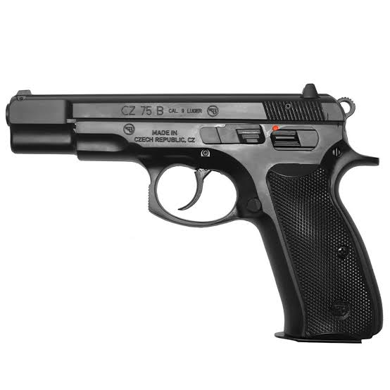
CZ 75
- Origin: Czechoslovakia
- Caliber: 9×19mm
- Introduced: 1975
- Type: Semi-automatic Pistol
The CZ 75 is a renowned service pistol that emerged during the Cold War and became
widely respected for its ergonomic design and mechanical reliability. Although
initially produced behind the Iron Curtain, it gained international recognition
through civilian and competitive shooting circles. The CZ 75 influenced numerous
later handgun designs and remains a significant example of Eastern European
firearms engineering.

FN Five-seveN
- Origin: Belgium
- Caliber: 5.7×28mm
- Introduced: 1998
- Type: Semi-automatic Pistol
The FN Five-seveN was developed in the late 1990s as part of a broader personal
defense weapon ecosystem. Designed to complement compact carbines using the same
ammunition, it features a lightweight polymer frame and high-capacity magazine.
The Five-seveN gained attention for its unconventional caliber and modern design,
becoming a distinctive example of late Cold War–era and post-Cold War handgun
development.
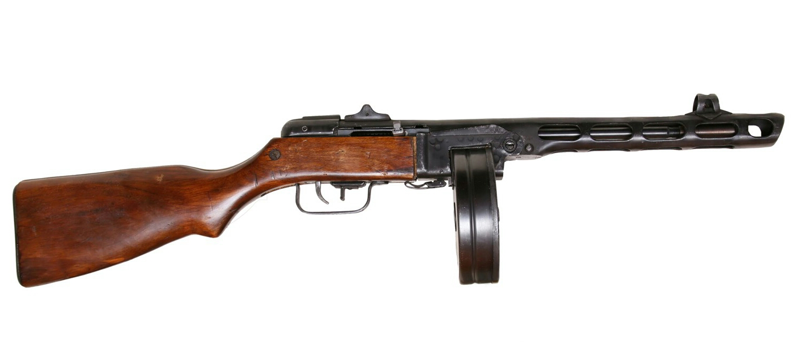
PPSh-41
- Origin: Soviet Union
- Caliber: 7.62×25mm Tokarev
- Introduced: 1941
- Type: Submachine Gun
The PPSh-41 was developed for mass production during World War II and became one of
the most prolific submachine guns ever manufactured. Its high rate of fire and
rugged construction suited the harsh conditions of the Eastern Front. The PPSh-41
symbolized Soviet industrial mobilization and close-quarters infantry combat.
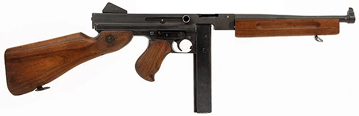
Thompson M1A1
- Origin: United States
- Caliber: .45 ACP
- Introduced: 1942
- Type: Submachine Gun
The Thompson M1A1 was a simplified wartime variant of the original Thompson
submachine gun, produced to meet the demands of World War II. Known for its heavy
construction and powerful cartridge, it served extensively with U.S. and Allied
forces. The Thompson became deeply embedded in 20th-century military history and
popular culture alike.

FN P90
- Origin: Belgium
- Caliber: 5.7×28mm
- Introduced: 1990
- Type: Personal Defense Weapon
The FN P90 represents a modern reinterpretation of the submachine gun concept.
Featuring a compact bullpup layout and distinctive top-mounted magazine, it was
designed for vehicle crews and support personnel. The P90 gained recognition for
its futuristic appearance and innovative engineering approach.

MP40
- Origin: Germany
- Caliber: 9×19mm
- Introduced: 1938
- Type: Submachine Gun
The MP40 was a standard German submachine gun during World War II and is often
associated with mechanized and airborne units. Its stamped metal construction
reflected evolving wartime manufacturing techniques. The MP40 influenced postwar
SMG design and remains one of the most recognizable firearms of the era.
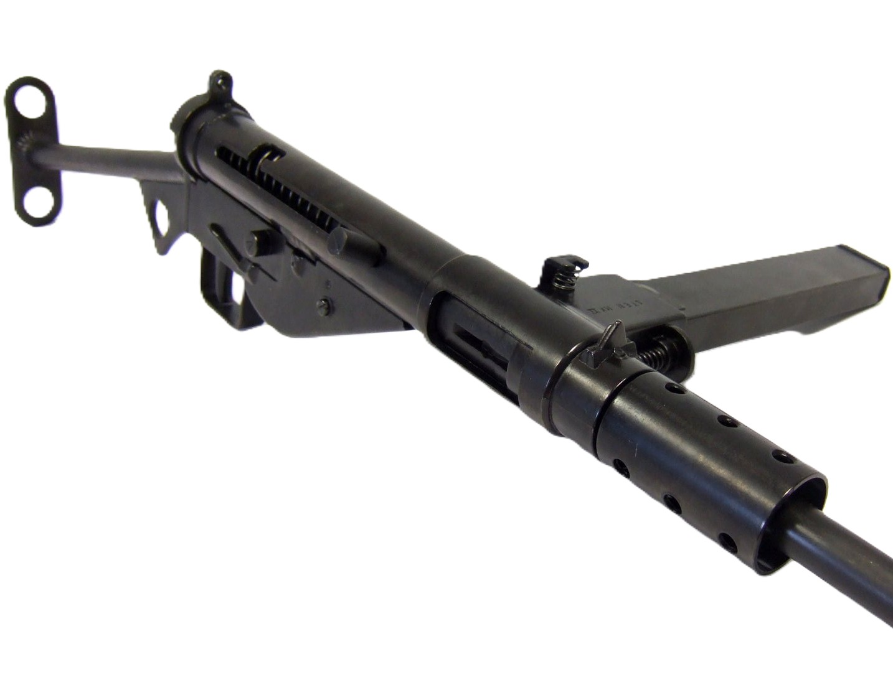
Sten Mk II
- Origin: United Kingdom
- Caliber: 9×19mm
- Introduced: 1941
- Type: Submachine Gun
The Sten Mk II was developed by Britain during World War II as an emergency weapon
designed for rapid and inexpensive production. Its extremely simple construction
allowed it to be manufactured in large numbers. Despite its crude appearance, the
Sten played a crucial role in arming Allied forces and resistance movements.

MAC-10
- Origin: United States
- Caliber: .45 ACP / 9×19mm
- Introduced: 1970
- Type: Submachine Gun
The MAC-10 was developed as a compact automatic firearm emphasizing high volume of
fire in a small package. Its simple construction and boxy profile made it easily
recognizable. While its practical adoption was limited, the MAC-10 became widely
known through media portrayals and remains a notable Cold War–era design.

Sterling L2A3
- Origin: United Kingdom
- Caliber: 9×19mm
- Introduced: 1953
- Type: Submachine Gun
The Sterling L2A3 was developed as a refinement of earlier British wartime designs
and emphasized improved reliability and ergonomics. Its distinctive curved magazine
and perforated barrel shroud helped differentiate it visually and mechanically from
its predecessors. The Sterling served as the standard British submachine gun for
decades and gained further recognition through its extensive use in film and media,
reinforcing its iconic silhouette.

Škorpion vz. 61
- Origin: Czechoslovakia
- Caliber: .32 ACP
- Introduced: 1961
- Type: Machine Pistol / SMG
The Škorpion vz. 61 occupies a unique position between traditional submachine guns
and machine pistols. Designed for vehicle crews and security personnel, it featured
a compact frame and a folding wire stock that emphasized concealability and control.
Its use of a relatively small-caliber cartridge set it apart from contemporaries,
prioritizing controllability over raw firepower. The Škorpion became widely exported
and is often studied as an early attempt at personal defense weapon concepts.